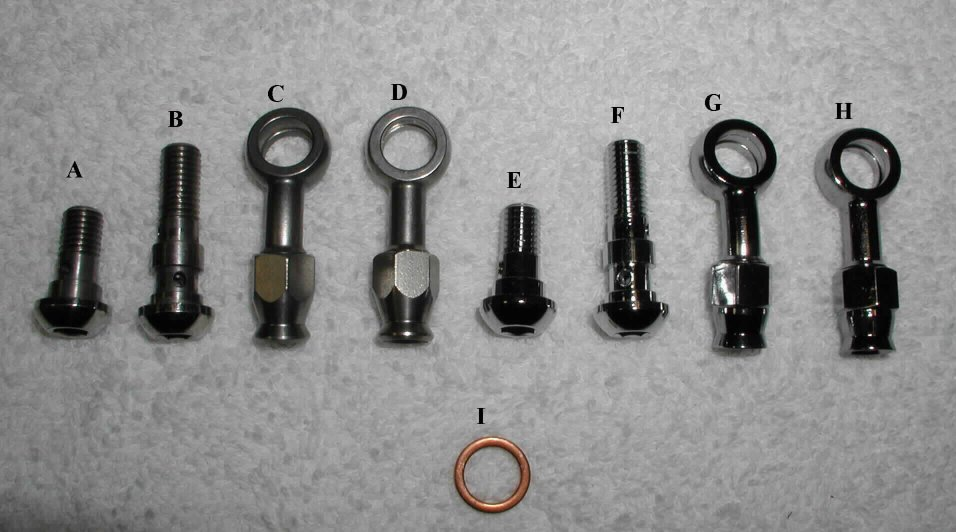
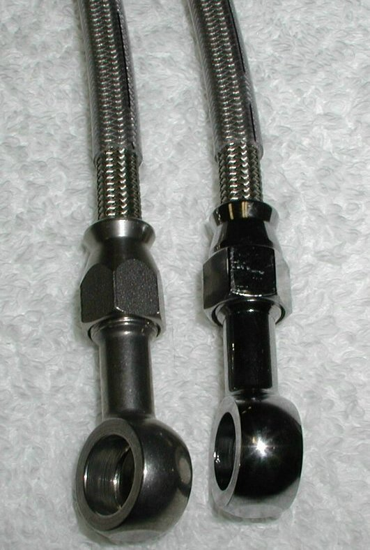
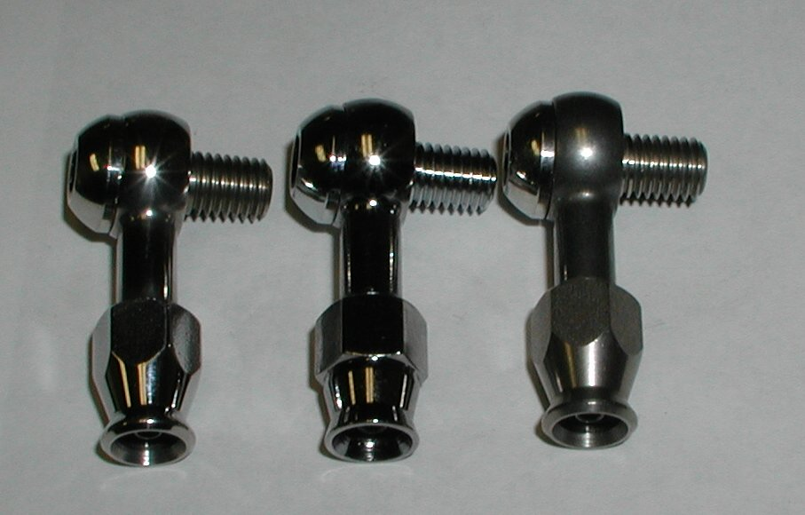

The above fittings can be used with the -3 stainless braided steel oil line (part # 54-800101,
$6.00
per foot) to make up custom rocker feed oil lines.
The domed banjo bolts take a 7/32 allen wrench.

The above picture shows a stainless fitting (left) and a chrome fitting (right) mounted on the braided stainless steel -3 line. This line comes with a clear covering to protect it from rubbing against other parts of your bike.

The stainless fittings do not have a shinny finish, but as the above picture shows, the stainless can easily be polished to be as shiny as the chrome fittings. The polished stainless fittings are on the left with the chrome fittings in the center and the un-polished stainless fittings on the right.
There is a technical article Making Braided Steel Oil and Brake Lines on our site that shows how to use the above fittings.
This page was written and designed by F. H. Eaton & Associates if you have any questions or comments please contact us at info@fheaton.com